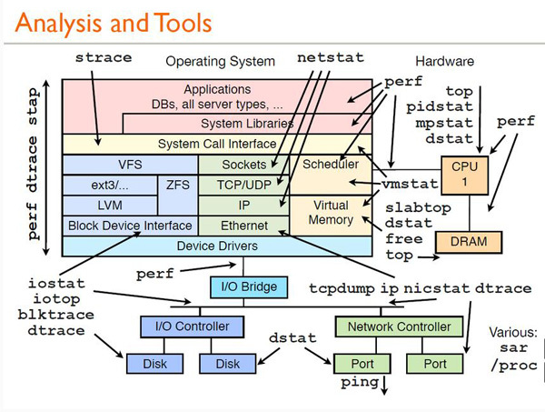
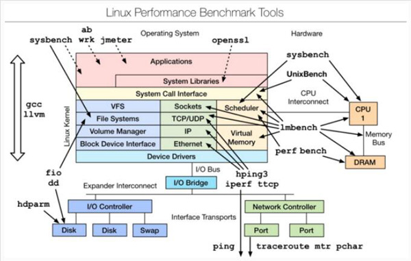
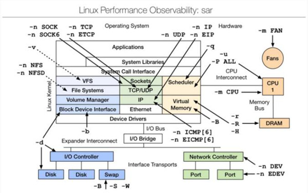

- vmstat–虚拟内存统计
- vmstat interval times即每隔interval秒采样一次，共采样times次，如果省略times,则一直采集数据，直到用户手动停止为止
- iostat–用于报告中央处理器统计信息
- ostat用于报告中央处理器(CPU)统计信息和整个系统、适配器、tty 设备、磁盘和 CD-ROM 的输入/输出统计信息，默认显示了与vmstat相同的cpu使用信息
- dstat–系统监控工具
- dstat显示了cpu使用情况，磁盘io情况，网络发包情况和换页情况，输出是彩色的，可读性较强，相对于vmstat和iostat的输入更加详细且较为直观。在使用时，直接输入命令即可，当然也可以使用特定参数。
- iotop–LINUX进程实时监控工具
- iotop命令是专门显示硬盘IO的命令，界面风格类似top命令，可以显示IO负载具体是由哪个进程产生的。是一个用来监视磁盘I/O使用状况的top类工具，具有与top相似的UI，其中包括PID、用户、I/O、进程等相关信息。
- pidstat–监控系统资源情况
- pidstat主要用于监控全部或指定进程占用系统资源的情况,如CPU,内存、设备IO、任务切换、线程等。
- 使用方法：pidstat –d interval;pidstat还可以用以统计CPU使用信息：pidstat –u interval;统计内存信息：Pidstat –r interval。
- top
- top命令的汇总区域显示了五个方面的系统性能信息：
- 负载：时间，登陆用户数，系统平均负载;
- 进程：运行，睡眠，停止，僵尸;
- cpu:用户态，核心态，NICE,空闲，等待IO,中断等;
- 内存：总量，已用，空闲(系统角度)，缓冲，缓存;
- 交换分区：总量，已用，空闲
- 任务区域默认显示：进程ID,有效用户，进程优先级，NICE值，进程使用的虚拟内存，物理内存和共享内存，进程状态，CPU占用率，内存占用率，累计CPU时间，进程命令行信息。
- htop
- htop 是Linux系统中的一个互动的进程查看器,一个文本模式的应用程序(在控制台或者X终端中),需要ncurses。
- mpstat
- mpstat 是Multiprocessor Statistics的缩写，是实时系统监控工具。其报告与CPU的一些统计信息，这些信息存放在/proc/stat文件中。在多CPUs系统里，其不但能查看所有CPU的平均状况信息，而且能够查看特定CPU的信息。常见用法：mpstat –P ALL interval times。
- netstat
- Netstat用于显示与IP、TCP、UDP和ICMP协议相关的统计数据，一般用于检验本机各端口的网络连接情况
- netstat –npl 可以查看你要打开的端口是否已经打开。
- netstat –rn 打印路由表信息。
- netstat –in 提供系统上的接口信息，打印每个接口的MTU,输入分组数，输入错误，输出分组数，输出错误，冲突以及当前的输出队列的长度。
- ps–显示当前进程的状态
- strace
- 跟踪程序执行过程中产生的系统调用及接收到的信号，帮助分析程序或命令执行中遇到的异常情况。
- uptime
- 能够打印系统总共运行了多长时间和系统的平均负载，uptime命令最后输出的三个数字的含义分别是1分钟，5分钟，15分钟内系统的平均负荷。
- lsof
- lsof(list open files)是一个列出当前系统打开文件的工具。通过lsof工具能够查看这个列表对系统检测及排错
- perf
- perf是Linux kernel自带的系统性能优化工具。优势在于与Linux Kernel的紧密结合，它可以最先应用到加入Kernel的new feature，用于查看热点函数，查看cashe miss的比率，从而帮助开发者来优化程序性能


